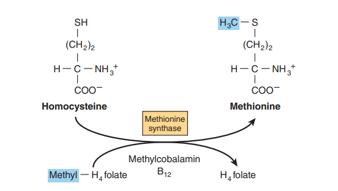

9.1.Profile of Vitamins
Vitamins refer to a class of small organic compounds that are essential for maintaining normal life activities in humans and animals. They cannot be synthesized in the body or synthesized in sufficient quantities, so they need to be obtained from the external environment (food). Vitamins do not participate in the formation of various tissues and organs in the body, nor do they provide energy to the body. Instead, they participate in the metabolism of substances and energy as coenzymes or cofactors. Lack of vitamins can lead to metabolic disorders and corresponding diseases. The study of vitamins can be roughly divided into three stages.
In the first stage, specific foods were used to treat certain diseases. For example, in China, bran rice rich in VB1 was used to treat beriberi, and pig liver rich in VA was used to treat "night blindness." In the 18th century, European sailors knew that eating fresh fruits and vegetables could treat scurvy. In the second stage, animal models were used to induce deficiency diseases. For example, scientists found that feeding chicks polished rice would cause neuropathy similar to beriberi in humans. In the third stage, essential nutrients were discovered. Scientists found that feed containing only carbohydrates, milk protein, lipids, salts, and water cannot meet the nutritional needs of animals. Certain nutrients are also needed to maintain life activities, namely vitamins.
9.1.1.Basic Nutrients
Humans must obtain various nutrients from food to maintain normal life activities. These nutrients are collectively referred to as nutrients. Food nutrients include seven major categories: carbohydrates, lipids, proteins, vitamins, water, dietary fiber, and minerals. These nutrients provide energy (carbohydrates, lipids), regulate substance metabolism (vitamins, minerals), and constitute structural components of the body (proteins). Minerals, also known as inorganic salts, include essential elements and trace elements needed by the body. More than 50 chemical elements have been discovered in the human body, of which C, O, N, and H are mainly present in the form of organic compounds, and Ca, Mg, Na, K, Cl, P, and S are major elements, accounting for 60-80% of the total ash content of the human body.
9.1.2.Characteristics of Vitamins
Although vitamins are indispensable for growth and metabolism, the overall demand is small. The daily requirement for vitamins in humans is only a few milligrams or micrograms. Excessive intake may cause vitamin toxicity.
- VA: Overuse can cause acute poisoning, resulting in symptoms such as loss of appetite, diarrhea, fever, and may lead to dry skin, hair loss, rashes, and bleeding from the mouth and nose. In severe cases, there may be a slight increase in transaminases, increased inflammation cells in the liver and spleen, and even hyperuricemia and migratory bone pain.
- VC: Supplementing more than 2 grams per day can cause symptoms such as abdominal pain, diarrhea, and gastrointestinal bleeding. In severe cases, it can even affect kidney function and lead to the formation of stones.
- VD: Excessive intake can cause hypercalcemia, kidney damage, and arrhythmias.
- VE: Excessive use generally leads to muscle weakness, headaches, etc. In severe cases, it can cause stroke, heart disease, etc.
Vitamins have different functions in cells compared to carbohydrates, lipids, and proteins. Vitamins do not serve as carbon sources, nitrogen sources, or energy substances, nor do they constitute structural components of the body. Most vitamins are components of coenzymes or cofactors. B-complex vitamins and VC participate in various enzyme reactions in the form of coenzymes or cofactors, while VA, VE, and VD do not have coenzyme functions. The three essential components in metabolic networks—energy, enzymes and cofactors, carbon skeletons are indispensable. If one of them is lacking, the metabolic network will collapse.
Different organisms have different physiological and metabolic characteristics, and their requirements for vitamins also differ. For example, VD is important for bone formation in animals but not necessary for plants. Some animals, such as rats, can synthesize VC themselves, but humans cannot and need to supplement it from food. Certain diseases can also lead to vitamin deficiencies. For example, liver disease can hinder vitamin absorption; long-term use of antibiotics can inhibit the growth of intestinal microorganisms, leading to deficiencies of VK, biotin, folic acid, and pantothenic acid; during pregnancy, lactation, and high-intensity exercise, increased intake of VB1 and VB2 is needed. In medicine, vitamins are commonly used to prevent and treat diseases caused by vitamin deficiencies, such as using VA to treat night blindness, VC to treat scurvy, and VD to treat rickets.
9.2.Coenzyme and Prosthetic Group
Cofactors are tightly bound to enzymes through covalent or non-covalent forces. Examples include flavin mononucleotide (FMN), flavin adenine dinucleotide (FAD), as well as transition metals such as iron, cobalt, copper, magnesium, manganese, and zinc. Metal ions involved in redox reactions are often bound in the form of organic metal complexes. Cofactors like heme can reversibly bind to enzymes or substrates. Coenzymes, similar to cofactors, loosely bind to their corresponding enzymes or substrates, forming complexes that can dissociate. Coenzymes serve as substrate shuttles, transporting many substrates from one point within the cell to another.
Many coenzymes and cofactors are derivatives of B-group vitamins, and water-soluble B vitamins provide important components for many coenzymes. Niacin is a component of NAD and NADP, riboflavin is a component of FMN and FAD, and pantothenic acid is a component of coenzyme A. Thiamine pyrophosphate is involved in decarboxylation reactions of α-keto acids, while folic acid and cobalamin participate in one-carbon metabolism.
9.3.Water Soluble Vitamins
Water soluble vitamins refer to a class of vitamins that are soluble in water, including B-group vitamins and vitamin C. In addition to the B vitamins discussed below, there is currently one type of vitamin, VB13, which is actually lactic acid and can be synthesized in the human body, participating in the synthesis of pyrimidine nucleotides.
| Properties |
|---|
| Highly water-soluble, able to dissolve in body fluids, excreted from the body with urine and sweat, and can be taken in appropriate amounts for long periods of time |
| All function as coenzymes or cofactors in enzyme-catalyzed reactions to maintain metabolism |
| CoA, CoⅠ, CoⅡ, FAD, and 5'-Deoxyadenosylcobalamin all contain adenine (deoxy) nucleotides |
| Not all coenzymes are derived solely from vitamins, such as CoQ in the respiratory chain |
(Ⅰ) VB1
Vitamin B1 was the first vitamin to be purified and consists of a pyrimidine ring containing an amino group and a thiazole ring containing sulfur, also known as thiamine. VB1 can increase appetite and maintain normal nerve function. When deficient, loss of appetite, numbness in the skin, weakness in the limbs, and damage to the nervous system may occur, clinically known as beriberi.
The main function of VB1 is to participate in carbohydrate metabolism in the form of a coenzyme. In the body, VB1 exists in its active form as thiamine pyrophosphate (TPP), participating as a coenzyme in decarboxylation reactions. Therefore, vitamin B1 is closely related to carbohydrate metabolism, and individuals who consume excessive amounts of sugar should supplement more vitamin B1.
As a coenzyme for pyruvate decarboxylase:
As a coenzyme for pyruvate dehydrogenase complex and α-ketoglutarate dehydrogenase complex:
As a coenzyme for transketolase:
(Ⅱ) VB2
Vitamin B2, also known as riboflavin, is abundant in foods such as grains, vegetables, dairy products, and fish. When deficient, it can lead to weakened tissue respiration and decreased metabolic intensity. The main symptoms include angular stomatitis, glossitis, and conjunctivitis. Animals cannot synthesize it on their own and must obtain it from food.
Riboflavin exists in two active forms in the body: flavin mononucleotide (FMN) and flavin adenine dinucleotide (FAD). Both serve as prosthetic group for flavoproteins and play a significant role in the transfer of [H] during oxidation-reduction reactions. Both forms have oxidized and reduced states. The oxidized forms are FMN and FAD, while the reduced forms are FMNH2 and FADH2. Enzymes that use FAM as a prosthetic group include NADH dehydrogenase, while enzymes that use FAD as a prosthetic group include succinate dehydrogenase, acyl-CoA dehydrogenase, dihydrolipoamide dehydrogenase, and alpha-glycerophosphate dehydrogenase.
(Ⅲ) VB3\Vpp
Vitamin PP, also known as Vitamin B3, is widely present in animals and plants. It is abundant in yeast, liver, lean meat, milk, and peanuts. It is also found in high levels in the bran and germ of grains. VB3 includes two forms: niacin (nicotinic acid) and niacinamide (nicotinamide), with niacin being the precursor of niacinamide. The active forms of niacinamide in organisms are nicotinamide adenine dinucleotide (NAD) and nicotinamide adenine dinucleotide phosphate (NADP). NAD exists in an oxidized form as NAD+ and an reduced form as NADH+H+. Similarly, NADP+ exists in an oxidized form as NADP+ and a reduced form as NADPH+H+. Both NAD+ and NADP+ serve as coenzymes for numerous dehydrogenases, participating as donors and acceptors of [H] in oxidation-reduction reactions and playing important roles in biological oxidation.
NAD+ serves as a coenzyme for dehydrogenases involved in catabolic metabolism generally, such as glycerol-3-phosphate dehydrogenase, isocitrate dehydrogenase, L-(+)-β-hydroxyacyl-CoA dehydrogenase, malate dehydrogenase, and α-glycerophosphate dehydrogenase. It accepts [H] during oxidation and is converted to NADH+H+. In most cases, NADH+H+ transfers [H] to the respiratory chain, ultimately being accepted by O2 to produce energy. NADPH is synthesized in the oxidative stage of the HMP pathway and the citric acid-pyruvic acid shuttle system. It commonly provides reducing power for biosynthetic processes, such as fatty acid and cholesterol synthesis, Glu synthesis from NH3, reduction of FH2 to FH4, reduction of NDP to dNDP, maintenance of Fe2+ in the heme prosthetic group of hemoglobin, and maintenance of reduced glutathione（GSH）.
The human body generally doesn't lack VB3, as it can be converted from tryptophan. However, long-term consumption of maize as the main food source may lead to VB3 deficiency due to the lack of tryptophan, leading to pellagra.
(Ⅳ) VB5
Vitamin B5, also known as pantothenic acid or pantothenate, is widely found in nature. One of its structural components is β-Ala, making it the only non-heterocyclic vitamin in the B-group vitamins. Pantothenic acid can be synthesized by bacteria in the human' gut.
In the body, pantothenic acid serves as a carrier of acyl groups and is converted into its active form, Coenzyme A (CoA), which participates in various metabolic pathways. CoA acts as a coenzyme for acyl transferases and contains a thiol group (-SH), thereby being represented as CoASH. When carrying an acetyl group, it is referred to as acetyl-CoA, and when carrying an acyl group, it is referred to as acyl-CoA. For example, prior to the TCA, pyruvate undergoes oxidative decarboxylation and acylation to form acetyl-CoA. Pantothenic acid can also participate in fatty acid synthesis metabolism by transferring acyl groups as acyl carrier protein (ACP).
(Ⅴ) VB6
Vitamin B6, also known as pyridoxine, is a derivative of pyridine and includes three structurally similar substances: pyridoxal, pyridoxol, and pyridoxamine, which can be converted into each other. In the body, VB6 exists in its active forms: pyridoxal phosphate (PLP), pyridoxamine phosphate (PMP), and pyridoxine phosphate (PNP). PLP and PMP are closely involved in amino acid metabolism, participating in transamination, decarboxylation, and racemization of amino acids as coenzymes for transaminases and decarboxylases. Therefore, individuals who consume high amounts of protein should supplement their intake of VB6.
VB6 is widely distributed in the animal and plant kingdoms, and it can also be synthesized by intestinal bacteria. Therefore, deficiency of VB6 is generally not common in the human body.
(Ⅵ) VB7\VBH
Vitamin B7, also known as vitamin H or biotin, is a S-containing vitamin. It serves as a coenzyme for carboxylases, such as pyruvate carboxylase and acetyl-CoA carboxylase, and participates in intracellular CO2 fixation and carboxylation reactions. In carboxylation reactions, the -COOH group is initially transiently attached to the nitrogen atom of its own molecule ring and then transferred to the substrate.
In certain amino acid fermentations, such as glutamate fermentation by Gluconobacter oxydans, the level of biotin is closely related to the production of Glu. When the biotin level is high, it enhances the activity of pyruvate carboxylase and strengthens the EMP pathway. However, at this time, the metabolic flow tends to enter lactate production rather than enter the TCA cycle, resulting in inadequate accumulation of α-ketoglutarate and reduced production of Glu. When the biotin level is low, the metabolic flow is weak, leading to lower glutamate production. When biotin is present at a suboptimal level, the ability of pyruvate carboxylation is weakened, but it reduces acetic acid production, and acetic acid is an activator of isocitrate lyase. With less acetic acid, the activity of isocitrate lyase is weakened, leading to the closure of the glyoxylate cycle, and more metabolic flow enters the pathway of glutamate synthesis, resulting in an increase in Glu production.
Some microorganisms in the intestinal tract of animals can synthesize biotin, so deficiency is generally not common. However, long-term consumption of raw egg white or excessive use of bacteriostatic antibiotics can hinder the absorption of exogenous biotin and the synthesis of endogenous biotin.
(Ⅶ) VB11
Vitamin B11, also known as folate (FH), is composed of pteridine, L-Glu, and p-aminobenzoic acid. Folate primarily exists in the form of tetrahydrofolate in organisms. Folate is first reduced by the action of folate reductase, using NADPH as a reducing agent, to form dihydrofolate (FH2), which is then further reduced to tetrahydrofolate (FH4). FH4, also known as THFA or CoF, serves as a coenzyme for one-carbon unit transfer enzymes, playing a role in the transfer and utilization of one-carbon units in biosynthetic reactions. These reactions include purine synthesis, interconversion between deoxyuridine monophosphate (dUMP) and deoxythymidine monophosphate (dTMP), and interconversion between Ser and Gly. Within the FH4 molecule, N5 and N10 are binding sites for one-carbon units, which can bind methyl (CH3), methylene (-CH2-), methenyl (=CH-), formyl (-H-C=O), hydroxymethyl (-CH2OH), and other groups. His can be converted to N5,N10-methenyl tetrahydrofolate, Ser and Gly can be converted to N5,N10-methylene tetrahydrofolate.

Folate is involved in nucleic acid metabolism and indirectly affects protein metabolism. Therefore, a deficiency in folate can lead to various diseases, such as megaloblastic anemia. Folate deficiency results in a deficiency of FH4, leading to insufficient one-carbon units participating in nucleic acid synthesis. As a result, DNA synthesis in red blood cells is impaired, causing them to enlarge and leading to hemolysis. However, due to the abundant presence of folate in green leafy vegetables, liver, and yeast, folate deficiency is generally not common in the human body.
(Ⅷ) Vitamin B12
Vitamin B12, also known as hydroxocobalamin, is the only vitamin that contains a metal element (Co). The active forms of VB12 in the body are methylcobalamin and 5'-deoxyadenosylcobalamin. Among these, methylcobalamin acts as a coenzyme for methylmalonyl-CoA mutase and participates in the regeneration process of Met and FH4 in methionine metabolism, closely related to nucleic acid and protein metabolism.
VB12 plays a crucial role in the maturation of red blood cells. Its deficiency can lead to pernicious anemia. This is because the activity of methylmalonyl-CoA mutase is inhibited, preventing the regeneration of Met and FH4, which in turn hinders DNA synthesis in red blood cells, affecting their maturation and causing an increase in cell volume, ultimately leading to anemia.

(Ⅸ) Lipoic Acid
Although not classified as a vitamin, lipoic acid is considered part of the B-group vitamin. Lipoic acid serves as a coenzyme for the pyruvate dehydrogenase complex and the alpha-ketoglutarate dehydrogenase complex. It forms a thioester bond with the epsilon-amino group of Lysine residues in enzyme proteins, and participates in the transfer of H and acetyl groups in the form of lipoamide, often in synergy with thiamine pyrophosphate (TPP). Lipoic acid has the ability to combat fatty liver and lower cholesterol levels. Reduced form of lipoic acid is commonly used in clinical settings for the detoxification of organic mercury and organic arsenic compounds. It also exhibits protective effects on enzymes containing sulfhydryl groups.
(Ⅹ) VC
Vitamin C, also known as ascorbic acid (ascorbate), is a substance that can prevent scurvy. It is actually a derivative of hexose, with D and L forms, but only the L form is active. It is a polyhydroxy lactone substance containing 6 hydroxyl groups, and the hydrogen on the hydroxyl group connecting C2 and C3 easily dissociates, giving it acidic properties.
VC is easily oxidized, making it an important antioxidant in the human body (other antioxidants include β-carotene, GSH, VE, etc.). It can protect the activity of sulfhydryl enzymes and maintain the reduced state of many compounds in cells. VC promotes the synthesis of collagen and mucopolysaccharides, which is beneficial for wound healing. It can act as a coenzyme for hydroxylases and participate in certain hydroxylation reactions. For example, hydroxylation of Lys and Pro in procollagen is necessary for the formation of active collagen, so the production and maintenance of connective tissue require VC. VC can reduce Fe3+ to Fe2+, facilitating its absorption, and is often used together with iron supplements to treat iron-deficiency anemia. It has been shown that VC is an effective intervention for the aging and degeneration of spinal motor neurons.
A deficiency in VC can lead to scurvy, and other symptoms include changes in the skin, fragile blood vessels, gum decay, tooth loss, and bone fractures. There is little conclusive evidence that high doses of VC can prevent the common cold, although they may reduce the duration and severity of symptoms.
VC is mainly found in fruits and vegetables, with rich amounts in kiwi, tomatoes, and peppers. The human body needs less than 100mg of VC per day, and if the intake exceeds this amount, the body's ability to metabolize them is saturated, and the excess will be excreted through urine. VC can be converted into oxalate, and high-dose intake may increase the formation of oxalate, increasing the risk of kidney stones.
9.4.Fat soluble Vitamins
Fat soluble vitamins refer to a group of vitamins that are soluble in non-polar lipid solvents, including vitamin A, D, E, and K. They are all lipid derivatives, which are absorbed by the human body through the intake and digestion of fats, and are transported and stored in the body together with fats.
| Characteristics |
|---|
| They are fat-soluble and can be stored in the body for a long time, without the need for long-term supplementation |
| Vitamin K serves as a coenzyme for the carboxylation of clotting factors, while the other three vitamins do not serve as coenzymes |
(Ⅰ) VA
Vitamin A, also known as retinol, is the earliest discovered vitamin. It contains unsaturated bonds and has active chemical properties. It is easily oxidized in the air and can be destroyed by exposure to ultraviolet light. Therefore, VA preparations should be stored in brown bottles to avoid light.
VA only exists in animal foods, and it is abundant in fish liver oil and animal liver. Carrots, tomatoes, and vegetables are rich in β-carotene, which can be converted into VA in the body. VA in food or VA generated from the cleavage of β-carotene binds with fatty acids in the intestinal mucosal cells, incorporates into chylomicrons (CM), and is absorbed by the human body through the lymphatic system, mainly stored in the liver.
VA has many physiological functions:
Maintaining vision
VA is the most light-sensitive vitamin, which promotes the formation of photosensitive pigments in visual cells. Retinol, the active form of VA in the body, is converted into rhodopsin, which serves as the photosensitive substance in rod cells of the retina and is responsible for night vision. Therefore, a deficiency can lead to night blindness.

Promoting growth and development
Retinol has effects similar to steroid hormones and can promote the synthesis of glycoproteins. It promotes growth and development, strengthens bones, and maintains the health of hair, teeth, and gums.
Maintaining the integrity and health of epithelial structures
VA can regulate the growth of epithelial tissue cells, maintain normal morphology and function of epithelial tissues, keep the skin moisturized, increase skin elasticity, prevent dryness and keratinization of the skin, and help treat acne, abscesses, acne, and skin ulcers.
Enhancing immune function
VA can enhance the body's resistance to infectious diseases, especially respiratory tract infections and parasitic infections.
Eliminating free radicals
VA has certain antioxidant properties and can neutralize harmful free radicals.
(Ⅱ) VD
Vitamin D, also known as the anti-rachitic vitamin, has a preventive effect against rickets. The known forms of vitamin D include D2, D3, D4, and D5, with D2 and D3 being the most active. D2 is ergocalciferol, while D3 is cholecalciferol. In the human body, cholesterol is converted to 7-dehydrocholesterol, which, in the skin, can be transformed into VD3 through exposure to ultraviolet rays. It is then absorbed by the blood and undergoes a series of reactions to be converted to VD in the liver and kidneys. In temperate climates, the plasma concentration of VD is highest at the end of summer and lowest at the end of winter. Beyond latitudes about 40° north or south, there is very little ultraviolet radiation of the appropriate wavelength in winter.
The active form of VD in the human body is 1,25-dihydroxycholecalciferol. Its main function is to regulate the absorption of calcium and phosphorus, maintain normal levels of calcium and phosphorus in the blood, and promote normal skeletal development. VD is abundant in animal livers, egg yolks, milk, and fish liver oil. Infants who lack VD may experience impaired bone development, which can lead to rickets, while adults deficient in VD may develop osteomalacia. There is growing evidence that higher VD status is protective against various cancers, including prostate and colorectal cancer, and also against prediabetes and the metabolic syndrome. Desirable levels of intake may be considerably higher than current reference intakes, and certainly could not be met from unfortified foods. While increased sunlight exposure would meet the need, it carries the risk of developing skin cancer
(Ⅲ) Vitamin E
Vitamin E, also known as tocopherol, exists in various natural forms. It can be classified into α, β, γ, δ, ζ, and η forms based on the different substituents on the phenyl ring. Among them, α-tocopherol has the highest biological activity.
VE is easily oxidized in the air, making it an important fat-soluble antioxidant in the human body. It can prevent the oxidation of unsaturated fatty acids in phospholipid molecules and protect biological membranes. It has the ability to eliminate free radicals and has anti-cancer, anti-pigmentation, and anti-aging effects.
VE is essential for animal reproduction, and its deficiency can lead to infertility. In experimental animals, VE deficiency results in resorption of fetuses and testicular atrophy, premature infants are born with inadequate reserves of VE.
(Ⅳ) VK
Vitamin K, also known as the clotting vitamin, plays a role in promoting blood clotting. It belongs to a class of quinone compounds with an isoprenoid side chain and is divided into two types: K1 and K2. K1 (Phylloquinone) is mainly found in plants and animal livers and is consumed by the body through food intake. K2 (Menaquinone) is produced by intestinal bacteria metabolism.
The main function of VK is to participate in blood clotting. It promotes the synthesis of clotting factors and converts prothrombin into thrombin. Thrombin, in turn, promotes the conversion of fibrinogen into fibrin, thereby accelerating blood clotting. If there is a deficiency of VK, the level of prothrombin in the blood decreases, leading to prolonged clotting time and impaired blood coagulation after bleeding.
9.5.Coenzyme Regeneration
As mentioned earlier, vitamins do not participate in energy supply or the structural composition of the body. Instead, they participate in enzymatic reactions as coenzymes to maintain the normal progress of these reactions. Coenzymes play a role in transferring electrons, atoms, and functional groups during enzymatic reactions. Therefore, for conjugated enzymes, once they lose their coenzymes, they also become inactive (this is different from enzyme activators). In order to ensure the activity of certain key enzymes (usually conjugated enzymes) in metabolic pathways, the corresponding coenzymes must be supplied in a timely manner. For example, in glucose metabolism, NAD+ acts as a substrate for glyceraldehyde-3-phosphate dehydrogenase, accepting the [H] and being reduced to NADH+H+, which then enters the oxidative dehydrogenation process in the mitochondrial inner membrane. As a result, NAD+ is regenerated and returns to the cytoplasm to accept the [H] released by glyceraldehyde-3-phosphate dehydrogenase. This cycle allows for continuous progression.
In the glycolysis, one molecule of glucose undergoes 10 enzymatic reactions to produce two molecules of pyruvic acid, two molecules of ATP, and two molecules of NADH+H+ under aerobic or anaerobic conditions. In tissues with sufficient oxygen supply, pyruvic acid directly undergoes oxidative decarboxylation to form acetyl-CoA in the next step. However, in conditions where oxygen is lacking, such as in vigorously exercising muscle tissue, pyruvic acid is reduced to lactic acid under the action of lactate dehydrogenase. This process requires the provision of [H] from NADH+H+ synthesized in glycolysis. NADH+H+ is oxidized back to NAD+, which then returns to the glycolysis as the [H] acceptor for glyceraldehyde-3-phosphate. The lactic acid enters the liver via the bloodstream and is converted back to glucose through gluconeogenesis. This process is also known as the lactate cycle, which not only controls the concentration of lactate in the blood to prevent acidosis but also regenerates coenzymes to ensure the normal progression of glycolysis.
In the pentose phosphate pathway, a large amount of NADPH is generated. However, since it cannot pass through the mitochondrial membrane, it cannot directly enter mitochondrial oxidative phosphorylation to produce ATP. Instead, under the action of transhydrogenase, NADPH and NADH can be interconverted. The generated NADH can enter the inner mitochondrial membrane via the shuttle system to participate in oxidative phosphorylation, while the regenerated NADP+ reenters the pentose phosphate pathway.
The concentration of ADP is also related to the rate of coenzyme regeneration. When the concentration of ADP is high, the energy charge is low. At this time, ADP can act as an activator for certain key enzymes in catabolic pathways, promoting catabolism and inhibiting anabolism. This accelerates coenzyme regeneration and promotes the transfer of electrons in the respiratory chain and the process of ADP phosphorylation, thereby rapidly generating ATP.